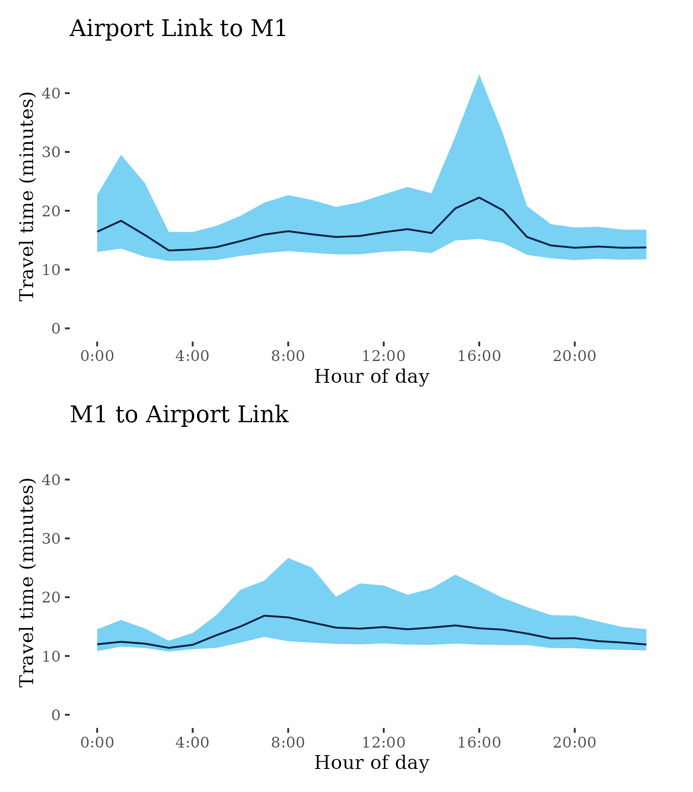

Congestion Report 2021
Congestion Report 2021Brisbane
The figure below shows all 10 selected Brisbane freight vehicle routes and an index of the METR across each route.
The figure below shows changes in the METRs and MEURs across each of the 10 selected Brisbane freight vehicle routes. A majority of routes in Brisbane experienced increases in travel time congestion in 2021. In particular, the highly-weighted M1 experienced increases in both directions reversing reductions observed in 2020.
There was fairly consistent increases in congestion uncertainty (MEUR) although increases in the city wide measure were increased largely by the highly weighted M1.
M1 – Bruce Hwy to Pacific Motorway / Pacific Motorway to Bruce Hwy
This route extends from the Gympie Arterial Road (M3) at Bald Hills in the north of Brisbane to Eight Mile Plains in the south of Brisbane, crossing the Brisbane River near Eagle Farm. It encompasses most of the Gateway Motorway. It is a major intercity and interregional route through its connections with the Pacific Motorway and Bruce Highway. This route also connects to the M2, M3, M4, M6 and M7 (via Southern Cross Way) motorways also covered in this report.

| Direction | Best travel time | Longest median travel time | METR | Least uncertainty range | Most uncertainty range | MEUR | Distance |
|---|---|---|---|---|---|---|---|
| Bruce Hwy to Pacific Motorway | 0:23:51 | 0:28:50 | 1.039 | 0:01:51 | 0:11:49 | 1.792 | 37.74 |
| Pacific Motorway to Bruce Hwy | 0:23:34 | 0:39:51 | 1.108 | 0:01:18 | 0:28:11 | 4.63 | 37.52 |
The best travel times and lowest uncertainty travelling from the Bruce Highway to the Pacific Motorway were at 2am and 1am with a median travel time of 24 minutes and an interquartile range of 2 minutes. The longest median travel times and greatest uncertainty were at 3pm with a median of 29 minutes and an interquartile range of 12 minutes.
The best median travel times for journeys from the Pacific Motorway to the Bruce Highway were 24 minutes at 7pm and the lowest uncertainty was at 7pm with an interquartile range of 78 seconds The longest median travel times and greatest uncertainty were at 4pm with a median of 40 minutes and an interquartile range of 28 minutes.
The afternoon peaks in both directions can be attributed to commuter traffic leaving the inner areas of Brisbane.
M2 (North) – Logan Motorway to Pacific Motorway / Pacific Motorway to Logan Motorway
This short (8 kilometre) route consists of the Gateway Motorway section of the M2 linking the M1 and the Logan Motorway at Drewvale in Southern Brisbane.

| Direction | Best travel time | Longest median travel time | METR | Least uncertainty range | Most uncertainty range | MEUR | Distance |
|---|---|---|---|---|---|---|---|
| Logan Motorway to Pacific Motorway | 0:05:18 | 0:06:46 | 1.031 | 0:00:20 | 0:05:53 | 2.849 | 8.40 |
| Pacific Motorway to Logan Motorway | 0:05:07 | 0:05:25 | 1.023 | 0:00:18 | 0:00:41 | 1.497 | 8.30 |
The best median travel times and least uncertainty for journeys from the Logan Motorway to the Pacific Motorway were at 4am with a median travel time of 5 minutes and an interquartile range of 20 seconds. The longest median travel times and greatest uncertainty were at 7am with a median of 7 minutes and an interquartile range of 6 minutes.
The best travel times and lowest uncertainty travelling from the Pacific Motorway to the Logan Motorway were at 3am and 4am with a median travel time of 5 minutes and an interquartile range of 18 seconds. The longest median travel times were 5 minutes at 4pm and the greatest uncertainty were at 5pm with an interquartile range of 40 seconds.

M2 (West) – Gateway Motorway to Ipswich Motorway / Ipswich Motorway to Gateway
This route uses the Logan Motorway section of the M2 between its confluence with the Gateway Motorway (M2 North) and junction with the M7 (Ipswich Motorway) at Gailes. It crosses the M5 (Centenary Highway) at Carole Park.

| Direction | Best travel time | Longest median travel time | METR | Least uncertainty range | Most uncertainty range | MEUR | Distance |
|---|---|---|---|---|---|---|---|
| Gateway Motorway to Ipswich Motorway | 0:10:16 | 0:13:25 | 1.046 | 0:00:52 | 0:07:20 | 2.12 | 16.11 |
| Ipswich Motorway to Gateway Motorway | 0:10:02 | 0:17:21 | 1.096 | 0:01:10 | 0:14:12 | 2.585 | 15.84 |
The best median travel times and least uncertainty for journeys from the Gateway Motorway to the Ipswich Motorway were at 3am with a median travel time of 10 minutes and an interquartile range of 52 seconds. The longest median travel times and greatest uncertainty were at 7am with a median of 13.5 minutes and an interquartile range of 7 minutes.
The best median travel times for journeys from the Ipswich Motorway to the Gateway were 10 minutes at 4am and the lowest uncertainty was at 4am with an interquartile range of 70 seconds. The longest median travel times were at 4pm with a median of 17 minutes and the greatest uncertainty at 3pm with an interquartile range of 14 minutes.
M3-A3 – Airport Link to M1 / M1 to Airport Link
This route follows the M3 and the surface road A3 with one end merging with the M1 at Bald Hills and the other meeting Airport Link (M7) next to Gordon Park. It is known as Gympie Road when labelled as the A3 and the Gympie Arterial Road when labelled as the M3.
| Direction | Best travel time | Longest median travel time | METR | Least uncertainty range | Most uncertainty range | MEUR | Distance |
|---|---|---|---|---|---|---|---|
| Airport Link to M1 | 0:13:14 | 0:22:14 | 1.204 | 0:04:52 | 0:28:00 | 2.009 | 12.98 |
| M1 to Airport Link | 0:11:23 | 0:16:51 | 1.216 | 0:01:50 | 0:14:10 | 3.926 | 12.97 |
The best median travel times and least uncertainty for journeys from the Airport Link to the M1 were at 3am with a median travel time of 13 minutes and an interquartile range of 5 minutes. The longest median travel times and greatest uncertainty were at 4pm with a median of 22 minutes and an interquartile range of 28 minutes.
The best median travel times for journeys from the M1 to the Airport Link were 11 minutes at 3am and the lowest uncertainty was at 3am with an interquartile range of 2 minutes. The longest median travel times were 17 minutes at 7am and the greatest uncertainty were at 8am with an interquartile range of 14 minutes

M3 (South) – Inner City Bypass to Pacific Motorway / Pacific Motorway to Inner City Bypass
This route follows the M3 connecting the Inner City Bypass at Bowen Hills and the M1 (Pacific Motorway) at Springwood in Brisbane’s southeast. It passes around the western edge of the CBD and crosses the Brisbane River at Woolloongabba and follows the Pacific Motorway.
| Direction | Best travel time | Longest median travel time | METR | Least uncertainty range | Most uncertainty range | MEUR | Distance |
|---|---|---|---|---|---|---|---|
| Inner City Bypass to Pacific Motorway | 0:15:26 | 0:25:29 | 1.135 | 0:02:50 | 0:18:51 | 2.526 | 20.07 |
| Pacific Motorway to Inner City Bypass | 0:15:52 | 0:21:13 | 1.109 | 0:02:23 | 0:12:49 | 2.506 | 20.11 |
The best median travel times for journeys from the Inner City Bypass to the Pacific Motorway were 15 minutes at 4am and the lowest uncertainty was at 4am with an interquartile range of 3 minutes. The longest median travel times and greatest uncertainty were at 5pm with a median of 25 minutes and an interquartile range of 19 minutes.
The best median travel times and least uncertainty for journeys from the Pacific Motorway to the Inner City Bypass were at 4am with a median travel time of 16 minutes and an interquartile range of 2 minutes. The longest median travel times and greatest uncertainty were at 7am with a median of 21 minutes and an interquartile range of 13 minutes.
M4 – Gateway Motorway to Port of Brisbane / Port of Brisbane to Gateway Motorway
This route links the Gateway Motorway (M1) at Murarrie and the Port of Brisbane via Port Drive and Port of Brisbane Motorway. It is an important route for freight to and from the Port but is not a major commuter route.
| Direction | Best travel time | Longest median travel time | METR | Least uncertainty range | Most uncertainty range | MEUR | Distance |
|---|---|---|---|---|---|---|---|
| Gateway Motorway to Port of Brisbane | 0:10:09 | 0:10:31 | 1.019 | 0:00:55 | 0:02:38 | 2.167 | 11.68 |
| Port of Brisbane to Gateway Motorway | 0:09:52 | 0:10:44 | 1.023 | 0:01:49 | 0:03:47 | 1.384 | 11.70 |
The best travel times and lowest uncertainty travelling from the Gateway Motorway to Port of Brisbane were at 4am and 3am with a median travel time of 10 minutes and an interquartile range of just under 1 minute. The longest median travel times were 11 minutes at 8pm and the greatest uncertainty were at 7pm with an interquartile range of just under 3 minutes
The best travel times and lowest uncertainty travelling from Port of Brisbane to the Gateway Motorway were at 1am and 4am with a median travel time of 10 minutes and an interquartile range of 2 minutes. The longest median travel times and greatest uncertainty were at 2am with a median of 11 minutes and an interquartile range of 4 minutes.
M5 – Bowen Hills to Logan Motorway / Logan Motorway to Bowen Hills
This route follows the M5 from the M3 and M7 motorways at Bowen Hills and meets the Logan Motorway (M2) at Forest Lake. It traverses the southwest fringe of Brisbane and utilises the Inner City Bypass, Legacy Tunnel, Western Freeway and Centenary Highway.

| Direction | Best travel time | Longest median travel time | METR | Least uncertainty range | Most uncertainty range | MEUR | Distance |
|---|---|---|---|---|---|---|---|
| Bowen Hills to Logan Motorway | 0:17:47 | 0:24:10 | 1.104 | 0:03:44 | 0:22:26 | 1.988 | 24.09 |
| Logan Motorway to Bowen Hills | 0:17:58 | 0:24:12 | 1.097 | 0:03:38 | 0:24:03 | 2.063 | 24.17 |
The best median travel times and least uncertainty for journeys from Bowen Hills to the Logan Motorway were at 2am with a median travel time of 18 minutes and an interquartile range of 4 minutes. The longest median travel times and greatest uncertainty were at 5pm with a median of 24 minutes and an interquartile range of 22.5 minutes.
The best median travel times and least uncertainty for journeys from the Logan Motorway to Bowen Hills were at 10pm with a median travel time of 18 minutes and an interquartile range of 4 minutes. The longest median travel times and greatest uncertainty were at 7am with a median of 24 minutes and an interquartile range also of 24 minutes.
M6 – Gateway Motorway to Pacific Motorway / Pacific Motorway to Gateway Motorway
The M6 route merges with the M2 at Drewvale and meets the Pacific Motorway (M1) at Loganholme using the Logan Motorway

| Direction | Best travel time | Longest median travel time | METR | Least uncertainty range | Most uncertainty range | MEUR | Distance |
|---|---|---|---|---|---|---|---|
| Gateway Motorway to Pacific Motorway | 0:09:03 | 0:09:24 | 1.022 | 0:00:36 | 0:04:17 | 1.834 | 14.60 |
| Pacific Motorway to Gateway Motorway | 0:08:59 | 0:09:54 | 1.03 | 0:00:42 | 0:04:20 | 1.686 | 14.54 |
The best travel times and lowest uncertainty travelling from the Gateway Motorway to the Pacific Motorway were at 2am and 3am with a median travel time of 9 minutes and an interquartile range of 36 seconds. The longest median travel times and greatest uncertainty were at 5pm with a median of 9 minutes and an interquartile range of 4 minutes.
The best median travel times for journeys from the Pacific Motorway to the Gateway Motorway were 9 minutes at 4am and the lowest uncertainty was at 4am with an interquartile range of 42 seconds The longest median travel times and greatest uncertainty were at 7am with a median of 10 minutes and an interquartile range of 4 minutes.
M7-A7 – Logan Motorway to Southern Cross Way / Southern Cross Way to Logan Motorway
This route follows the A7 and M7 through central Brisbane and links the Logan Motorway (M2) at Gailes in the south and the Southern Cross Way branch of the Gateway Motorway near Brisbane Airport. It uses Ipswich Motorway (M7), Ipswich Road (A7) and Airport Link M7 past the CBD and under the Brisbane River as the Clem Jones Tunnel along its way.

| Direction | Best travel time | Longest median travel time | METR | Least uncertainty range | Most uncertainty range | MEUR | Distance |
|---|---|---|---|---|---|---|---|
| Logan Motorway to Southern Cross Way | 0:25:35 | 0:34:39 | 1.122 | 0:07:14 | 0:32:11 | 2.012 | 30.33 |
| Southern Cross Way to Logan Motorway | 0:26:07 | 0:31:58 | 1.105 | 0:07:34 | 0:22:02 | 1.707 | 30.46 |
The best median travel times and least uncertainty for journeys from the Logan Motorway to Southern Cross Way were at 11pm with a median travel time of 26 minutes and an interquartile range of 7 minutes. The longest median travel times and greatest uncertainty were at 7am with a median of 35 minutes and an interquartile range of 32 minutes.
The best median travel times and least uncertainty for journeys from Southern Cross Way to the Logan Motorway were at 2am with a median travel time of 26 minutes and an interquartile range of 7.5 minutes. The longest median travel times and greatest uncertainty were at 3pm with a median of 32 minutes and an interquartile range of 22 minutes.
Route 2 – A7 to Gateway / Gateway to A7
This short (11 kilometre) surface route links the M7/A7 at Rocklea with the Gateway Motorway (M1) at Mackenzie. It passes Robertson and under the Pacific Motorway (M3) along the way.
| Direction | Best travel time | Longest median travel time | METR | Least uncertainty range | Most uncertainty range | MEUR | Distance |
|---|---|---|---|---|---|---|---|
| A7 to Gateway | 0:11:23 | 0:19:29 | 1.195 | 0:02:29 | 0:20:06 | 2.922 | 11.06 |
| Gateway to A7 | 0:11:07 | 0:16:11 | 1.196 | 0:02:12 | 0:14:07 | 3.442 | 11.06 |
The best median travel times and lowest uncertainty for journeys from A7 to the Gateway Motorway were at 2am with a median travel time of 11 minutes and an interquartile range of 2.5 minutes. The longest median travel times and greatest uncertainty were at 8am with a median of 19.5 minutes and an interquartile range of 20 minutes.
The best median travel times and least uncertainty for journeys from the Gateway Motorway to A7 were at 3am with a median travel time of 11 minutes and an interquartile range of 2 minutes. The longest median travel times and greatest uncertainty were at 8am with a median of 16 minutes and an interquartile range of 14 minutes.